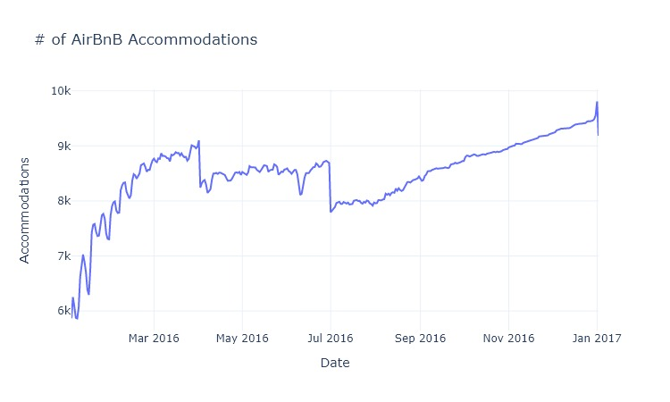
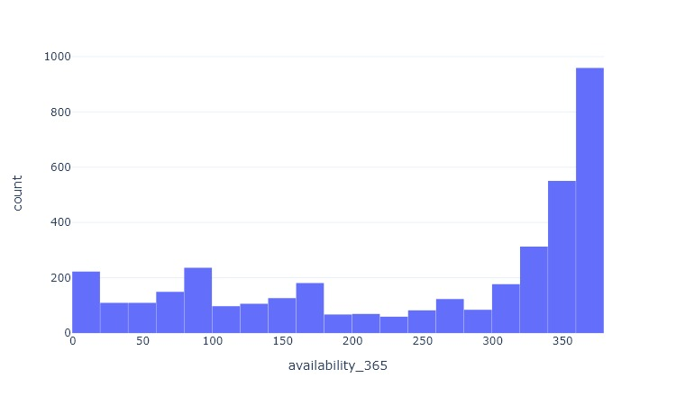
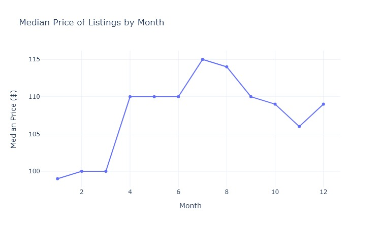
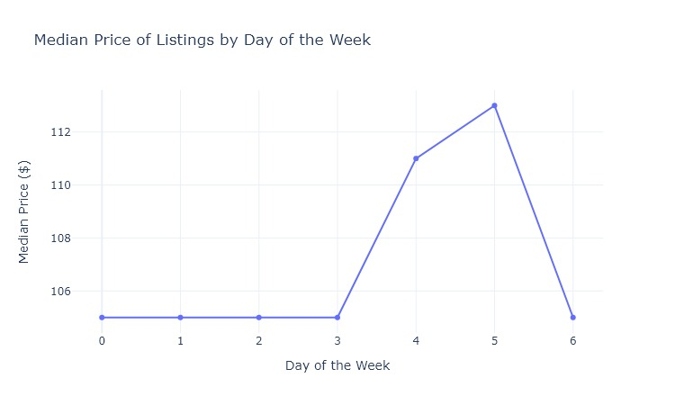
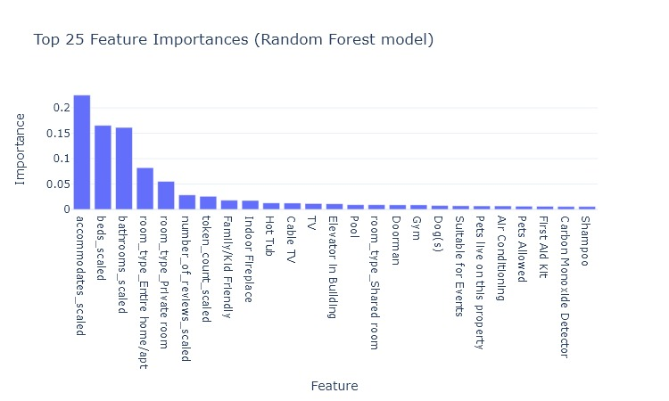

What Can Be Learned from the Seattle AirBnB Dataset?
I spent some time exploring the Seattle AirBnB dataset on Kaggle. If you want to follow along with my work more closely, you can visit my GitHub repo here.
Q1. What can be learned about the availability of listings?
Well, this is not what I was expecting. It looks like total accommodations increases very quickly in the early part of the year, slows down in spring, drops off a table in early April and again in July, before slowly climbing throughout the rest of the year, and one more major drop. What’s happening here?
This is a histogram of the availability_365 field which measures how often a listing is available in the previous 365 days. It looks like most listings are available for the majority of the year. Those that are not have a mostly even distribution. I suspect that when a new listing appears during the year, let’s say in August, that the days before the listing existed are considered to be unavailable. This would explain why the total accommodations generally increase as the year goes on.
Q2. How does the asking price change?
My intuition tells me that listing prices will increase on weekends and holidays. Is that true? Let’s find out!
This chart shows the median price by month. Looks like the price follows the temperature with a deviation in December.
chart
Here we see that the price does, in fact, rise on Fridays and Saturdays. However, the average change in price is fairly small with an increase of only $8. That’s probably not too much to dissuade you from a weekend in Seattle!
chart
For holidays, I chose 12 dates associated with federal holidays or holiday eves. The median price was the same for both holiday and non-holiday.
Q3. What are common features of super hosts?
What makes a host super? What special powers do they possess? Must they wear capes? These are difficult questions to answer and I will actually only attempt to answer the first one (because obviously what is the point of being a superhost if you can’t wear a cape?).
In order to divine these super traits, I took a look at the review scores for various metrics that hosts receive. In each category, the superhosts’ scores were higher than regular hosts.
| Host Type | Rating | Accuracy | Check-in | Communication | Location | Value |
|---|---|---|---|---|---|---|
| Regular | 93.65 | 9.55 | 9.73 | 9.76 | 9.57 | 9.35 |
| Superhost | 97.40 | 9.91 | 9.96 | 9.97 | 9.75 | 9.74 |
That’s not surprising at all. Super literally means “above.” If you look at the response time of all hosts, you’ll find that superhosts are more likely to respond within an hour (62.8%) than regular hosts (40.0%). That’s faster than a speeding bullet!
Okay, so superhosts are super responsive and super highly reviewed, they must command a pretty penny then, right? Well, no, not exactly. On average, they cost less than $3 more.
Q4. What factors contribute the most to price?
To find out, I compiled a bunch of columns of data and ran a few regressions. The below table shows the score and the top 5 most important features for each. Features in bold were in the top 5 for each.
| Regression | R squared | Top 5 Inputs |
|---|---|---|
| Linear | .46 | Doorman, Accommodates, Bathrooms, Elevator in Building, Hot Tub |
| SVM | .45 | Entire Home/Apt, Accommodates, Bathrooms, Shared Room, Doorman |
| Random Forest | .49 | Accommodates, Bathrooms, Entire Home/Apt, Private Room |
The best performing model was a Random Forest. However, the improved performance is very slight. The most important features in this model were the number accommodated, bathrooms, beds, and room types of entire home/apt or private room. Bathrooms and Accommodates appear as a top 5 feature in each model.
